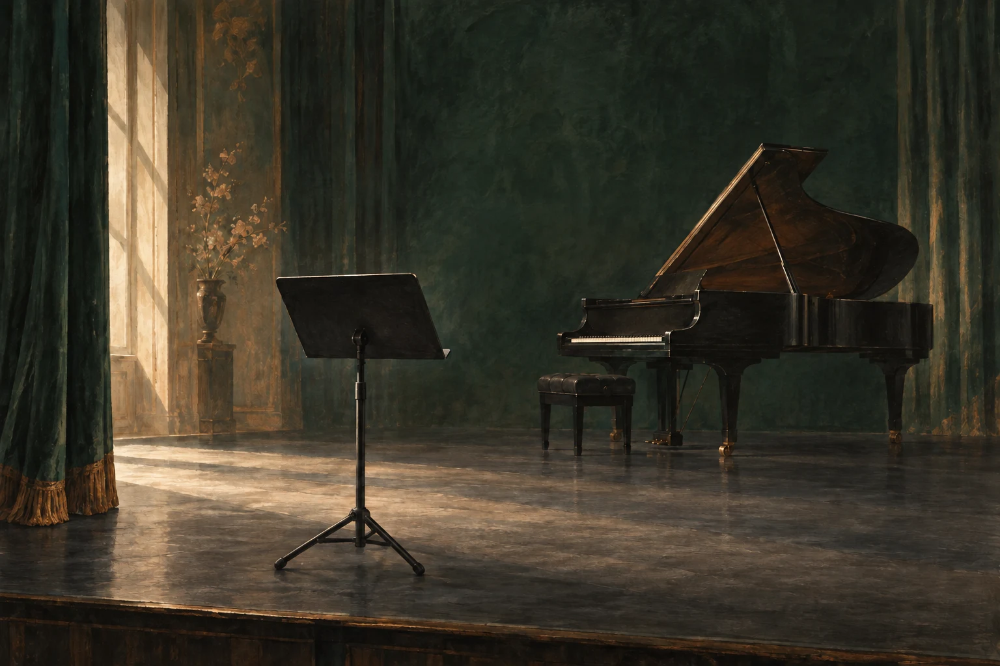
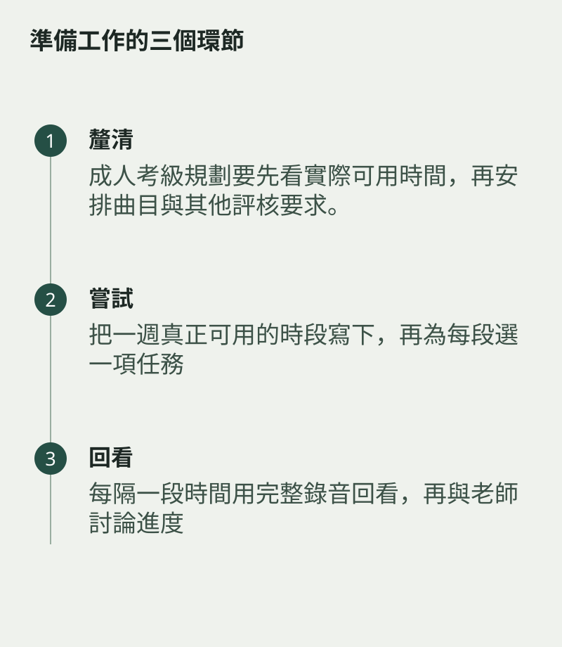

成人考級規劃要先看實際可用時間，再安排曲目與其他評核要求。把準備拆成短段並定期回看，工作繁忙時調整任務，而非靠考前補足所有時數。
成人考級
報考日子應配合準備程度，不必為了追趕想像中的進度而勉強。
把一週真正可用的時段寫下，再為每段選一項任務。較短時段可以處理音階接縫或幾拍節奏，較完整時段才做合伴奏或通奏。工作繁忙時先減少範圍，別讓每次練習都背着補回欠帳的壓力。

每隔一段時間用完整錄音回看
每隔一段時間用完整錄音回看，再與老師討論進度。報考是音樂計劃的一部分，選擇一個能力與生活都能承受的時間，準備也較容易持續。